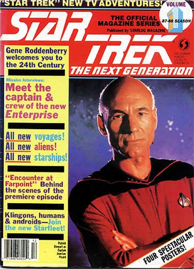
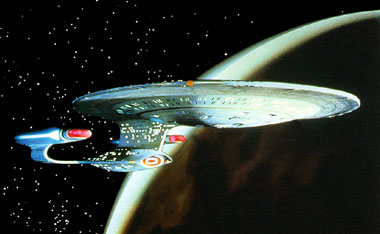
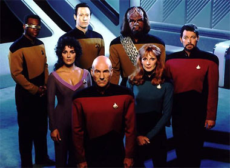

|

Publicado originalmente
como notcia, em 2002
A Nova Gerao
completa 15 anos!
Veja o que o Trek
Brasilis publicou quando a segunda srie com atores de Jornada nas
Estrelas completou seu 15 aniversrio

|
H exatos 15 anos, em 28/09/1987, ia ao ar nos Estados Unidos
o episdio-piloto de A Nova Gerao, "Encounter
at Fairpoint".
No final da dcada de 80 o universo de Jornada nas Estrelas
no era to imenso quanto hoje. Enquanto comemoramos o aniversrio
de 1 ano da estria da 5 srie do franchise para televiso, Enterprise,
nesta ltima quinta-feira, naquela poca existiam apenas quatro
filmes para cinema e a srie original dos anos 60, alm dos 22
episdios da srie animada. Hoje temos nove filmes para cinema,
com um novo prontinho para estrear, e mais de 650 episdios de
televiso.
 Capa da primeira revista oficial da srie. Dezembro de 1987 No Brasil, A Nova Gerao chegou bem rpido. J em 1989 as locadoras recebiam fitas com episdios da primeira temporada, algo at inesperado pois naquela poca no havia Jornada na TV brasileira desde o incio da dcada. Em 1991 a extinta TV Manchete comprou as duas primeiras temporadas da Srie Clssica e o primeiro ano de A Nova Gerao, que era exibido nas tardes de sbado. Embora a srie no tenha demorado a chegar para os telespectadores brasileiros, ficou estagnada, presa ao seu primeiro ano durante muito tempo. Quem queria saber mais sobre as aventuras de Picard e a nova Enterprise-D tinha de recorrer aos "traficantes de fitas", como eram conhecidas as pessoas que recebiam os episdios diretamente dos Estados Unidos e vendiam cpias, s vezes por preos bem salgados, para os fs que tinham a necessidade de acompanhar a srie. Vale ressaltar que na grande maioria das vezes a qualidade da imagem era pssima. Convenes e reunies de trekkers para assistir s novidades de A Nova Gerao eram eventos aguardados com ansiedade. Nessa poca pr-internet e pr-TV por assinatura, uma boa maneira de acompanhar o que rolava, alm dos eventos, era atravs das revistas em quadrinhos publicadas pela Editora Abril entre 1991 e 1992. As edies contavam com explicaes dos editores sobre a presena de Whoopi Goldberg no elenco, as promoes de patente de LaForge e Data, o novo posto de Worf, a ausncia da dra. Crusher no segundo ano e a nova barba de Riker.  Em 1997, uma boa notcia. A Rede Record comeava a exibir o 3 ano, que contava com clssicos como "Yesterdays Enterprise", "Sarek" e boas supresas como "Who Watches the Watchers?" e "The Defector". Infelizmente, a Record nunca exibiu o episdio final da temporada, "The Best of Both Worlds". Enquanto isso, na TV a cabo, o canal USA promovia seu final de semana Sci-Fi, estreando o 2 ano da srie, uma temporada prejudicada pela greve dos roteiristas de Hollywood em 1988, mas que trazia bons roteiros como Q Who, "The Measure of a Man" e "A Matter of Honor". O canal USA continua a exibir a srie at os dias de hoje, e se encontra no final da 6 temporada. O Trek Brasilis, com seus trs anos de vida, conta com um considervel acervo de informaes sobre A Nova Gerao. Para saber histrias de bastidores e curiosidades, vale a pena reler o que o colunista Fernando Rodrigues (aqui) tem a dizer, ou conferir as matrias sobre a produo da srie, aqui. E quem quiser se inteirar sobre os episdios, deve dar um pulo obrigatrio em nosso guia preparado por Salvador Nogueira.  E que venham mais 15 anos! |